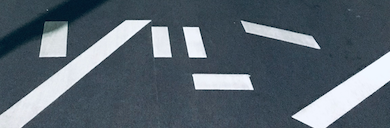

舗装の上の白

深夜のアスファルトは青い。街灯に照らされた白線だけが、意味ありげに並んでいる。 横断歩道の断片、消えかけた矢印、誰かが引いた直線。
冷たいネオン
歓楽街のネオンは、必ずしも暖色じゃない。 むしろ夜の温度は青くて、白い光ほど冷たく刺さる。
歩くことでしか見えない街の表情がある。 walk.mp4 のように、ただ前へ進むだけの映像に、なぜか見入ってしまう。
帰り道の設計
このまちの夜道は、いくつかの区画をまたいで伸びている。 静けさへ、そして記憶の廃墟へ。

深夜のアスファルトは青い。街灯に照らされた白線だけが、意味ありげに並んでいる。 横断歩道の断片、消えかけた矢印、誰かが引いた直線。
歓楽街のネオンは、必ずしも暖色じゃない。 むしろ夜の温度は青くて、白い光ほど冷たく刺さる。
歩くことでしか見えない街の表情がある。 walk.mp4 のように、ただ前へ進むだけの映像に、なぜか見入ってしまう。
このまちの夜道は、いくつかの区画をまたいで伸びている。 静けさへ、そして記憶の廃墟へ。